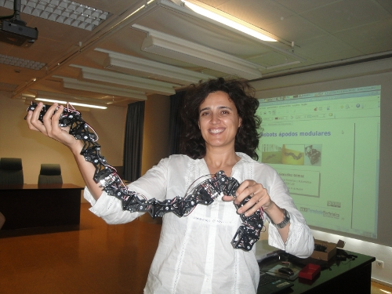
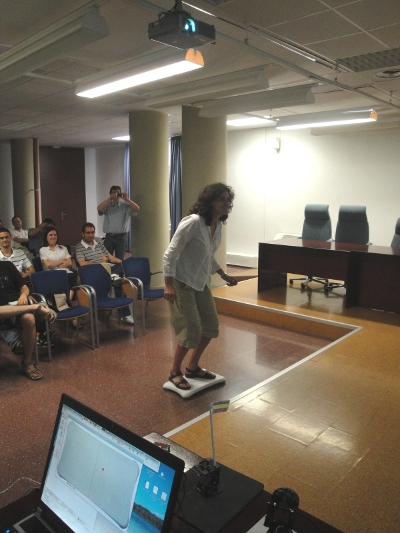
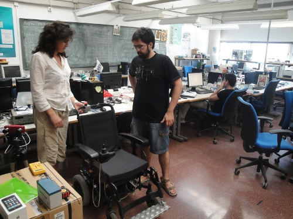
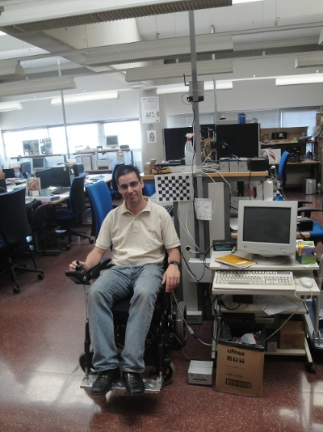

Ya están publicadas las transparencias de la charla sobre robots ápodos modulares que di el pasado 17 de Junio en la ETSI de Telecomunicaciones de la Universidad de Málaga.
Robots ápodos Modulares. Málaga-17/Jun/2010
Además de mostrar en vivo los robots modulares Unimod, Minicube-I, Cube3, Minicube-II y Cube12, me llevé la wiiboard y el wiimote para “frikear”. En la foto está Cristina Urdiales moviendo un servo con la wiiboard. También la usamos para mover una webcam y controlar un robot modular mediante movimientos de cadera.

En la charla también estuvieron Francisco Reinoso (Furri) y Javier Suvires (BoOpS), a los que no veía desde la reunión de ARDE en Madrid. Gracias por venir 🙂
Aprovechando la visita, Cristina me enseñó la silla de ruedas con control compartido que han desarrollado. Manolo Fernández y Jose Jaime Ariza la pusieron en marcha y me hicieron una demo. La verdad es que me quedé asombrado de lo bien que funciona

y me dejaron probarla 🙂

Jose Manuel Peula me hizo varias demostraciones de realidad aumentada y Juan Manuel Mesa puso en funcionamiento una red inalámbrica de sensores (Sun Spot).
Como siempre, la visita fue interesantísima y aprendí muchísimas cosas. Sólo me queda dar las gracias a Cristina Urdiales por haberme invitado y a Manolo Fernández, Jose Jaime Ariza, Jose Manuel Peula y Juan Manuel Mesa por las demostraciones. ¡¡Muchísimas gracias!!
Excelente presentación Juan. Me ha gustado mucho. Gracias por compartirla.
Un abrazo.
Como siempre magistral, Gracias de nuevo.
He intentado construirme un módulo Y1 en casa en material DM por lo que he cambiado el diseño dejando pestañas para fortalecer las uniones… el primero ha ido a la basura por culpa de no haber verificado que se imprimia a escala… 😛 … el segundo este fin de semana…
El viernes probablemente me vea con un amigo que tiene una CNC, ya le he enviado los planos del módulo Y1 para que me construya unos pocos en PVC de 3mm.
Ya te contaré.
Saludos.
Paco.
Muchas Gracias Alejandro 😉
Hola Furri!
La mejora de las pestañas es muy interesante. Espero ansioso ver esos módulos andando.
Suerte! 🙂
Pues aqui tienes el primero, habria que poner juntos al tuyo y al mio si llegamos a la final… 😛
http://www.xbot.es/blog/?p=410
Un abrazo.
furri.
Hola Furri!
Genial! 😀 El módulo te ha quedado muy bien. Ahora con 5 vas a poder hacer unos robots modulares muy chulos 😉